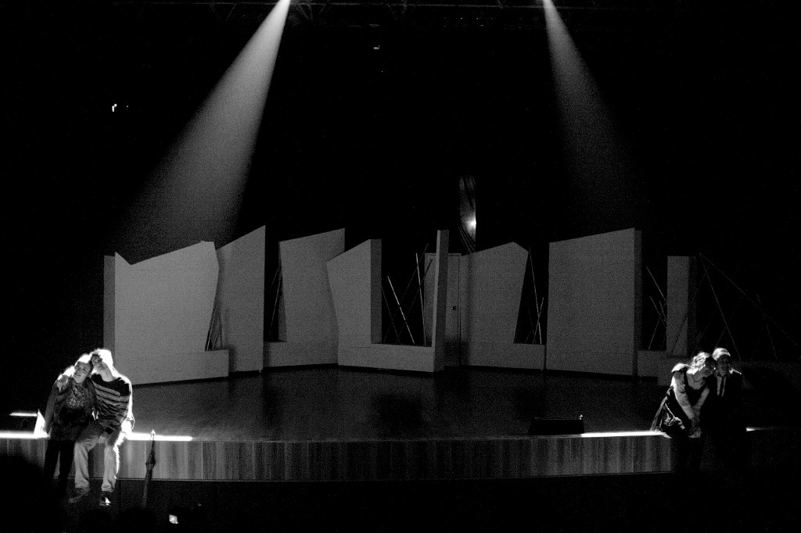
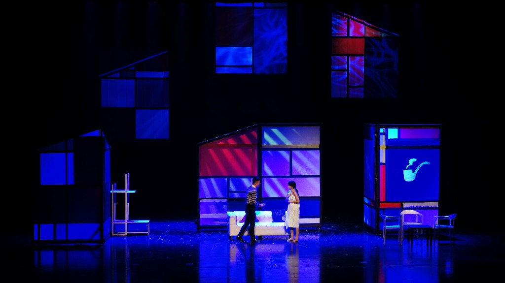
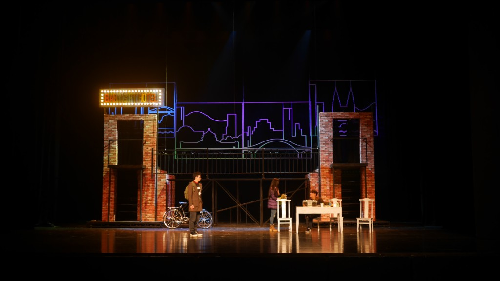
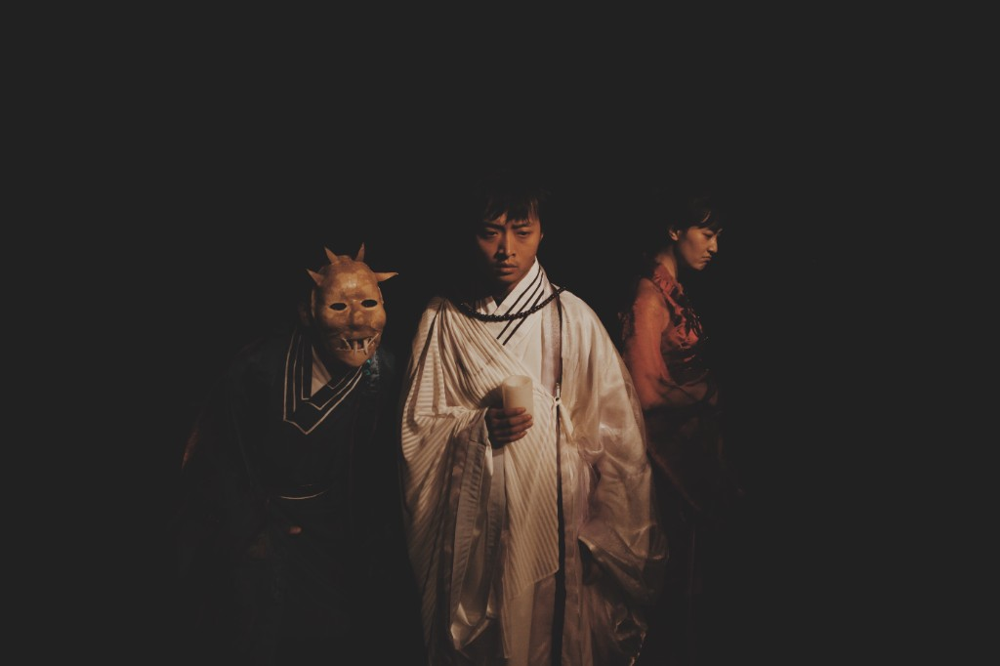
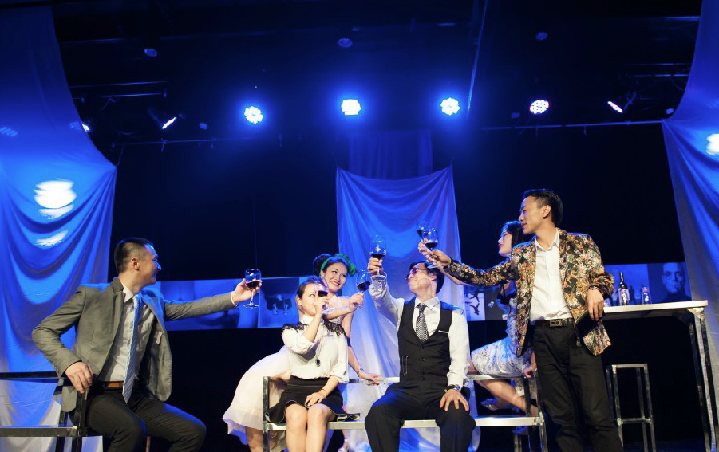
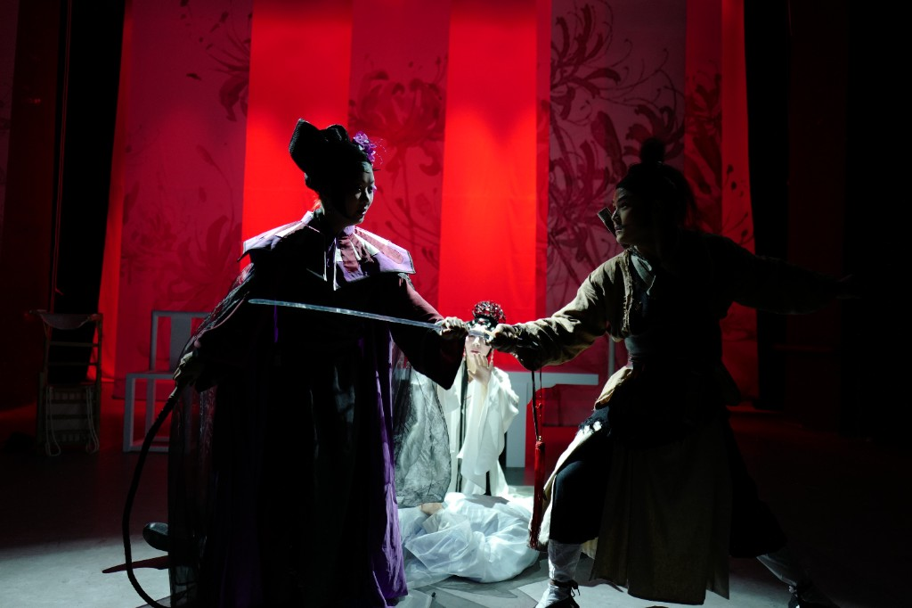
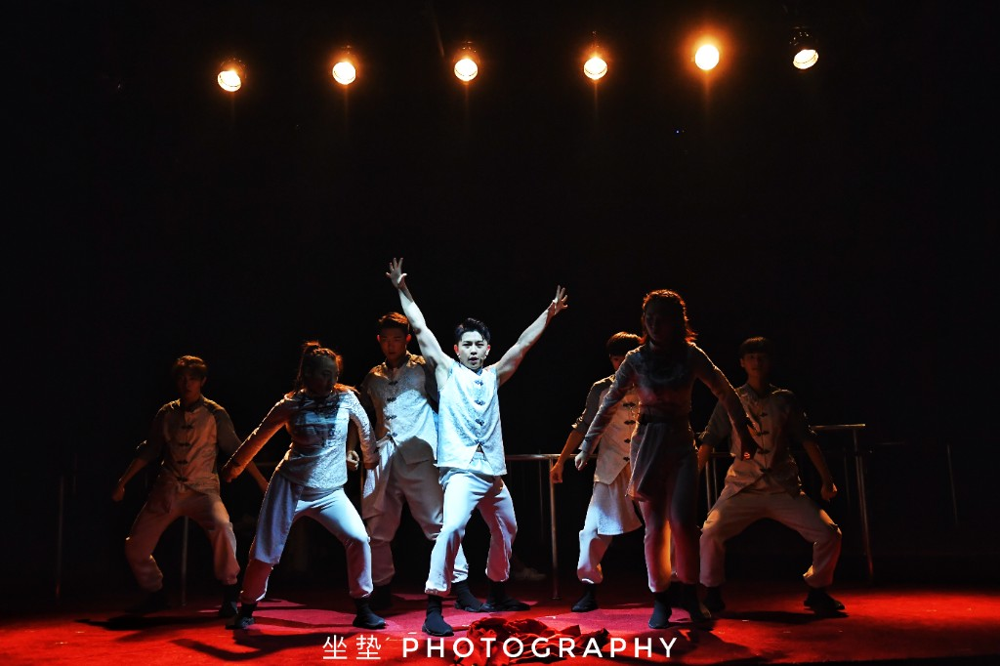
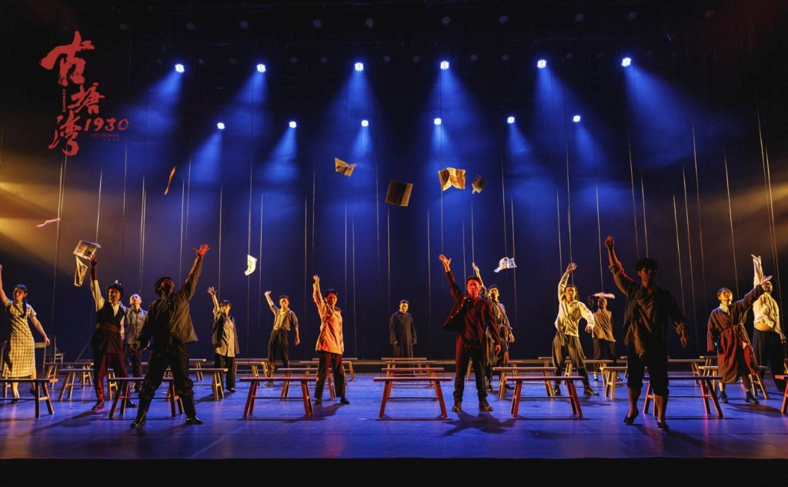

Still · 7080 · ©惊喜之夜
No. 01 / 09 ————
都市情感喜剧
7080Seventy–Eighty
围绕四位在爱情中迷失的都市青年，呈现当代城市生活中的亲密关系困境与情感焦虑。
往期展演 · Concluded
Past works — what came before.
从原创话剧、沉浸式演出到儿童剧与实验作品，这些过往项目构成了我们的创作轨迹。每一部都是一次尝试、一次学习，也是走向下一部的铺垫。

围绕四位在爱情中迷失的都市青年，呈现当代城市生活中的亲密关系困境与情感焦虑。

以 80 后与 90 后的爱情碰撞为核心，描绘快节奏都市中的代际情感观与亲密关系博弈。

从一场毕业旅行出发，在重庆串联父女、友情与爱情，追问"人生最后会记住谁"。
婚外情调查牵出谋杀案，在反转中直面家暴议题与女性在暴力关系中的处境。

从巴渝"目连救母"传说出发，以悬疑与解构重探慈悲、误解、真相与重建。

酒吧里被打乱的牛皮纸袋，牵出欲望、秘密与身份伪装下的信任危机。

《聊斋》经典以川剧、舞美与舞蹈语言重构，委约于第十九届上海国际艺术节。

以重庆白象街为场域，民国叙事与非遗线索交织的浸没式城市爱情故事。

以信仰为核，自"马日事变"起笔，讲述叶魁与古塘湾共产党员在长沙河西的白色恐怖岁月中奋起抗争的故事。
围绕四位在爱情中迷失的都市青年，呈现当代城市生活中的亲密关系困境与情感焦虑。
以 80 后与 90 后的爱情碰撞为核心，描绘快节奏都市中的代际情感观与亲密关系博弈。
从一场毕业旅行出发，在重庆串联父女、友情与爱情，追问"人生最后会记住谁"。
婚外情调查牵出谋杀案，在反转中直面家暴议题与女性在暴力关系中的处境。
从巴渝"目连救母"传说出发，以悬疑与解构重探慈悲、误解、真相与重建。
酒吧里被打乱的牛皮纸袋，牵出欲望、秘密与身份伪装下的信任危机。
《聊斋》经典以川剧、舞美与舞蹈语言重构，委约于第十九届上海国际艺术节。
以重庆白象街为场域，民国叙事与非遗线索交织的浸没式城市爱情故事。
以信仰为核，自"马日事变"起笔，讲述叶魁与古塘湾共产党员在长沙河西的白色恐怖岁月中奋起抗争的故事。
如果你看完这九部作品仍想聊——无论是合作、版权、场地，还是纯粹的好奇——欢迎直接联系我们。
开启合作 →